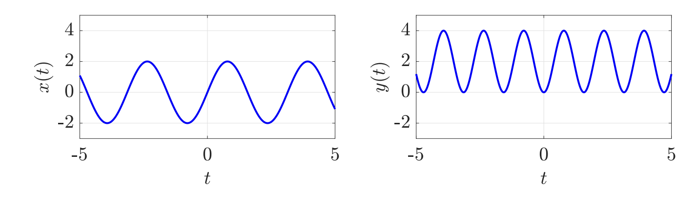

SS 5. Continuous-Time System
Last Edit: 3/8/26
Continuous-Time System #
A CT system takes a CT input and produces a CT output
Pointwise Definition of CT system #
Given the output of the system $y(t)=T{x}(t)$ it’s determined by an explicit formula from ${x(t)}_{t\in \mathbb R}$
Ex. Pointwise CT System #

$$ y(t) = (x(t))^2 $$
CT System Property: Linearity #
A Linear System has two properties, 1. Homogeneity and 2. Additivity, which can be written as
$$ T{\alpha x + \tilde{\alpha}\tilde{x}} = \alpha T{x} + \tilde{\alpha} T{\tilde{x}} $$
Zero input in Linear System #
Based on Homogeneity: $T{0 \cdot x} = 0 \cdot T{x}$, thus a zero input always have a zero output
Example: The Squaring System #
A squaring System is $y(t) = (x(t))^2 \text{}$, sub in to get
$$ T_{\text{sq}}{\alpha x + \tilde{\alpha}\tilde{x}}(t) = (\alpha x(t) + \tilde{\alpha}\tilde{x}(t))^2 \text{}= \alpha^2(x(t))^2 + \tilde{\alpha}^2(\tilde{x}(t))^2 + 2\alpha\tilde{\alpha}x(t)\tilde{x}(t) \text{} $$
This is not equal to adding their output separately
$$ \alpha T_{\text{sq}}{x}(t) + \tilde{\alpha}T_{\text{sq}}{\tilde{x}}(t) = \alpha(x(t))^2 + \tilde{\alpha}(\tilde{x}(t))^2 \text{} $$
CT System Property: Time-Invariance #
A time delay in CT system is defined as $x_\tau(t) = x(t - \tau)$, a system is Time-Invariance if
$$ y = T{x} \implies y_\tau = T{x_\tau} $$
Physical meaning: an experiment on the system tomorrow will produce the same results as an experiment on the system today
Example: The Squaring System #
Sub in the time delay in the Squaring System $y(t) = (x(t))^2$, notice
$$ T_{\text{sq}}{x_\tau}(t) = (x_\tau(t))^2 = (x(t - \tau))^2 $$
Thus that the Squaring System is a Time-Invariance System
CT System Property: Causality #
A CT System is causal if for all $t\in \mathbb R$, the output $y(t)$ depends only on the past and present input values ${x(\tau)}_{\tau\leq t}$
Equivalent Definition #
A CT system T is causal if for any time $t_0$ and any two inputs $x$, $\tilde{x}$ satisfy $x(t)=\tilde{x}(t)$ for all $t\leq t_0$, then their ouputs $y=T{x}$ and $\tilde{y}=T{ \tilde{x} }$ should also be the same
CT System Property: Memoryless #
A CT System is memoryless if for all time $t\in \mathbb R$, the output $y(t)$ only depends on input $x(t)$ at the same time
CT System Property: Invertibility #
A CT system is invertible if
$$ T_{\text{inv}}{T{x}} = T{T_{\text{inv}}{x}} = x $$
CT System Property: Stability (Linear System Only) #
Recall Bounded Signal #
A CT signal is bounded if $|x|\infty = \max{t \in \mathbb{R}} |x(t)|$ is a finite value, thus it’s max amplitude will be a finite value
BIBO Stable #
A linear CT system T is Bounded-Input Bounded-Output if there’s a constant $K\geq 0$ such that $|y|\infty \leq K|x|\infty$
Ex. Stable CT system #
A Integrator is not a BIBO Stable System, as if the input is a step function, the output goes to infinity, which is not bounded
Summarize #

Linear Time-Invariant (LTI) System #
LTI system are both Linear and Time-Invariant
Recall: CT unit Impulse #
$$ \int_{-\infty}^{\infty} x(t)\delta_\tau(t) , dt = x(\tau) \text{} $$
The Impulse Response for a LTI System #
Given the CT unit Impulse as the input of the LTI System, we can then get the $h(t)$ which is the Impulse Resposne for the System
The Response of an LTI System #
As we know the LTI system’s Impulse Response, we can then calculate its response under any input signal, here’s proof
Known that $x(t) = \int_{-\infty}^{\infty} x(\tau)\delta(t-\tau) d\tau$, $x(\tau)$ represent the Magnitude of signal at that time, and $\delta(t-\tau)$ selected that time, by adding those all together, we can recover the original signal
Secondly, we are going to apply the Linear Property that
$$ y(t) = T\left{ \int_{-\infty}^{\infty} x(\tau)\delta_\tau d\tau \right} = \int_{-\infty}^{\infty} x(\tau) T{\delta_\tau} d\tau $$
If we define the Response of LTI System under Impulse as $h(t)$, then based on the Time-Invariant Property, we get
$$ T{\delta(t-\tau)} = h(t-\tau) $$
Put this back into the $\int_{-\infty}^{\infty} x(\tau) T{\delta_\tau} d\tau$, we can then get
$$ y(t) = \int_{-\infty}^{\infty} x(\tau)h(t-\tau) d\tau $$
Which is just he Convolution Integral
Convolution #
The convolution of two signals can be defined as
$$ y(t) = (h * x)(t) = \int_{-\infty}^{\infty} h(t - \tau)x(\tau) \text{d}\tau $$
Observations of Convolution #
Convolution is about Period #
At any time t, the output $y(t)$ depends on the input $x$ and $h$’ s entire signal instead of pointwise property
Steps to Calculate Convolution #
- Time Reverse h
- Shift Forward
- Multiply Pointwise
- Integrate over all $\tau$
Property of CT Convolution #

Limitation of Convolution #
A case where Convolution doesn’t work can be $v(t)=1$, and
$$ (v * v)(t) = \int_{-\infty}^{\infty} (1)(1) , d\tau = \int_{-\infty}^{\infty} 1 , d\tau = +\infty $$
A result of Infinite doesn’t make sense, such is then undefined
Conditions for existence of Convolution #

Convolution Example: Integrator System #
Now using the Step Function as the input of an Integrator, we have $x(t)=u(t)$, also known that the Impulse Response of an Integrator is $h(t)=u(t)$, thus this a convolution between two Step Functions, we can thus get
$$ y(t) = \int_{-\infty}^{\infty} x(\tau)h(t-\tau) , d\tau = \int_{-\infty}^{\infty} u(\tau)u(t-\tau) , d\tau $$
As Step function is piecewise function, we are analysing in two segments
- For $t<0$: No Value
- For $t\geq0$: $y(t) = \int_{0}^{t} (1 \cdot 1) , d\tau = \tau \Big|_0^t = t$
Thus we have
$$ y(t) = \begin{cases} 0, & t < 0 \ t, & t \ge 0 \end{cases} $$
Convolution Example: Gaussian and Wavelet #

LTI system properties and the impulse response #
The key property for LTI system is that the output of any LTI system is given by the convolution of the impulse response with the input signal
$$ y(t) = \int_{-\infty}^{\infty} h(t - \tau)x(\tau) \text{d}\tau $$
Whereas we can use $h(t)$ to classify the system property
Causality #
Causal if and only if $h(t) = 0$ for all $t < 0$
Memoryless #
Memoryless if and only if $h(t) = αδ(t)$ for some $\alpha \in \mathbb R$
The Response only depends on current input, a scalar
BIBO Stable #
BIBO Stable if $\int_{-\infty}^{\infty} |h(t)| \text{d}t < \infty$, equivalently
$$ |y|_\infty \le |h|1 |x|\infty $$
-6-286